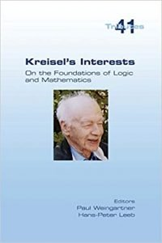

Kreisel’s Interests?

College Publications is indeed a decidedly peculiar outfit. On the one hand, they publish a lot of books on logic (broadly construed), and the books appear as very inexpensive print-on-demand paperbacks (excellent!). On the other hand, the quality control seems entirely unreliable, and many books must surely fall more or less stone dead from the press with tiny sales. Moreover, the press seem to make no real effort to spread the word: there is a very amateurish, ill-organized, website which often has only uselessly minimal information about the publications. As far as I can see, there is nothing like e.g. a quarterly newsletter that librarians and the rest of us can sign up for. It’s not surprising then that few of their books seem to end up even in the vast Cambridge university library system.
There are of course successes — for a couple of relatively recent ones, there is the very nice Model Theory for Beginners: 15 Lectures by Roman Kossak (2021), and the good-to-have-in-one-place collected Essays on Set Theory by Akihiro Kanamori (also 2021). So a few days ago in an idle hour, I trawled through the College Publications website to see if I could find anything else published in the last few years that looked sufficiently appealing …
One book that caught my eye was Kreisel’s Interests: On the Foundations of Logic and Mathematics, edited by Paul Weingartner and Hans-Peter Leeb (2020). The advertising blurb says just this:** The contributions to this volume are from participants of the international conference Kreisel’s Interests — On the Foundations of Logic and Mathematics, which took place from 13 to 14 August 2018 at the University of Salzburg in Salzburg, Austria. The contributions have been revised and partially extended. Among the contributors are Akihiro Kanamori, Göran Sundholm, Ulrich Kohlenbach, Charles Parsons, Daniel Isaacson, and Kenneth Derus. The contributions cover the discussions between Kreisel and Wittgenstein on philosophy of mathematics, Kreisel’s Dictum, proof theory, the discussions between Kreisel and Gödel on philosophy of mathematics, some biographical facts, and a collection of extracts from Kreisel’s letters.
Which certainly isn’t very informative, but was enough to pique my interest, and I sent off for a copy (at that point offered at a large discount by Amazon — I suspect they had an already-printed copy they wanted to offload!).
A grave disappointment. Working backwards, this short book ends with some fifty pages consisting on short snippets taken from letters from Kreisel to Kenneth Derus (or letters to others which Kreisel copied to Derus). The snippets are mostly from five to ten lines long: there are some fun gossipy remarks about a wide cast of characters — but not much logic. This is preceded by a twenty-five page piece by Dan Isaacson, ‘Georg Kreisel: Some Biographical Facts’. But this is all about Kreisel before 1950, i.e. before his first publications. We learn a bit about his early interests, his early contact with Wittgenstein, his war work, his return to Cambridge and his developing interests; there are hints, not really worked out, that Kreisel’s project of trying to extract finitist content from non-finitist proofs was inspired by Wittgenstein. But there is little to delay us here.
So that just leaves the preceding 86 pages of the book. There is a short piece by Göran Sundholm on Kreisel’s Dictum’. You’ll recall that Dummett attributes to Kreisel the thought that “the point is not the existence of mathematical objects but the objectivity of mathematical truth”. Sundholm notes that while Dummett attributes a variety of versions of this remark to Kreisel, none of them are to be found clearly stated in Kreisel’s writings. And Sundholm reports that when he directly asked Kreisel, he didn’t endorse any of the Dummettian versions. There follow a few pretty unclear pages on what the dictum might come to.
Quite out of place in this book, there is a very technical paper by Ulrich Kohlenbach, with the not-very-inviting title ‘Local Formalizations in Nonlinear Analysis and Related Areas and Proof-Theoretic Tameness’. I didn’t get anything at all out of this: but expert proof-theorists can read the paper here and judge for themselves.
That leaves us with just two remaining papers. The two volumes of Gödel’s Collected Correspondence don’t feature exchanges with Kreisel, as he wouldn’t give permission to use the letters. Charles Parsons was one of the editors of Gödel’s Correspondence and, although he does not say so, I imagine that his paper here on ‘Kreisel and Gödel’ was based on work done in preparing those volumes which at the time came to nothing. So now we do get brisk outlines of the preserved exchanges. But there is a tantalizing lack of detail. For example we are told that Gödel in a letter to Kreisel refers to his (Gödel’s) Russell paper but then adds remarks about intuitionism which aren’t in the paper. But we get just a one-sentence hint of their gist. A perhaps slightly frustrating read, then. (Parsons, though, does reproduce in full a rather odd final letter from Kreisel to Gödel.)
Finally, the book starts with a piece by the indefatigable Akhiro Kanamori, on ‘Kreisel and Wittgenstein’. There’s an early period, in which the impressionable undergraduate Kreisel is befriended by Wittgenstein, and becomes a companion for walks. Some seeds are sown here by Wittgenstein’s rather constructivist inclinations. Then middle Kreisel, so to speak, famously reviews Wittgenstein’s Remarks on the Foundations of Mathematics in a highly critical way (“it seems to be a surprisingly insignificant product of a sparkling mind”). Later Kreisel is somewhat more nuanced in his responses to Wittgenstein on logic and mathematics — though I’m not sure I got from Kanamori a very clear picture of Kreisel’s later view of Wittgenstein (though maybe there wasn’t a determinate view there to be clearly pictured).
Anyway, Kanamori’s was the piece in Kreisel’s Interests that interested me the most (though, frankly, that wasn’t a difficult competition to win). Again you can read the paper without buying the book, as it is available here.
A footnote. One thing I learnt from Kanamori’s references is that Piergiorgio Odifreddi has edited some of Kreisel’s non-technical writings About Logic and Logicians into two substantial volumes. These include previously unpublished lecture notes, journal papers, biographical memoirs, etc. It says in the preface “Kreisel himself wrote all the texts, but Odifreddi has made some substantial editorial interventions, rearranging some of the material, breaking the text into sections and paragraphs, inserting titles, moving or removing some notes, and eliminating some digressions.” The result is readable and often engaging. The collection itself doesn’t seem to have been conventionally published; but drafts of the two volumes are available online here.